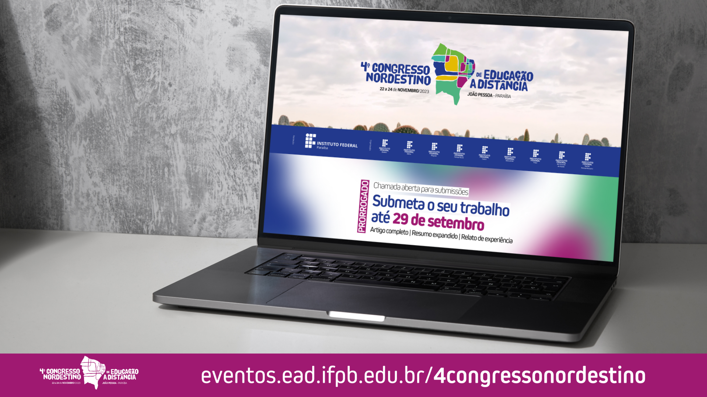

Realização:
Organização:


Comunicação
Manual da Marca
Conheça o MANUAL DE USO DA MARCA da 4ª Edição do Congresso Nordestino de Educação a Distância contendo recomendações sobre a aplicação da marca em diversas situações.
Cronograma divulgação
01 de novembro - 21 de novembro - Inscrições e atividades
Convite Evento / Detalhamento atividades / Orientações sobre participação nas atividades do evento.
MÍDIAS
Story convite inscrições evento - Mary Roberta (Reitora IFPB)
Mídia: Vídeo com áudio (1'01")
Dimensões: 1080x1920px
Recomendação canal: Instagram / Facebook / TikTok
Baixar arquivo de mídia
15 de agosto - 29 de setembro - Início das submissões de trabalhos
Convite Evento / Chamada para propostas de Minicursos / Orientações sobre os procedimentos de submissão de trabalhos.
MÍDIAS
Story convite evento - Leopoldina Veras (CONIF / IF Sertão Pernambucano)
Mídia: Vídeo com áudio (49")
Dimensões: 2160x3840px (4K)
Recomendação canal: Instagram / Facebook / TikTok
Baixar arquivo de mídia
Story Créditos
Mídia: Vídeo sem áudio (7")
Dimensões: 1080x1920px
Recomendação canal: Instagram / Facebook / TikTok
Baixar arquivo de mídia
Story convite evento - Adonias Soares Silva Jr. (IF Sertão Pernambucano)
Mídia: Vídeo com áudio (38")
Dimensões: 1080x1920px
Recomendação canal: Instagram / Facebook / TikTok
Baixar arquivo de mídia
Story Chamada Submissões (PRORROGAÇÃO)
Mídia: Vídeo sem áudio (5")
Dimensões: 1080x1920px
Recomendação canal: Instagram / Facebook / TikTok
Baixar arquivo de mídia
Story Chamada Minicurso (PRORROGAÇÃO)
Mídia: Vídeo sem áudio (5")
Dimensões: 1080x1920px
Recomendação canal: Instagram / Facebook / TikTok
Baixar arquivo de mídia
Imagem Chamada Submissões com site (PRORROGAÇÃO)
Mídia: Imagem (jpg)
Dimensões: 1920x1080px
Recomendação canal: Twitter (X) / Threads / Portal Institucional / Notícias / Mensagem Instantânea (WhatsApp, Telegram, Messenger, Direct)
Baixar arquivo de mídia
{kind=link}
20 de julho - 05 de agosto:
Lançamento da campanha / pré-submissão de trabalhos
Apresentar o evento, o tema, a data de realização, o local, o público-alvo e os organizadores / informar com antecedência o período de submissão de trabalhos aos pesquisadores.